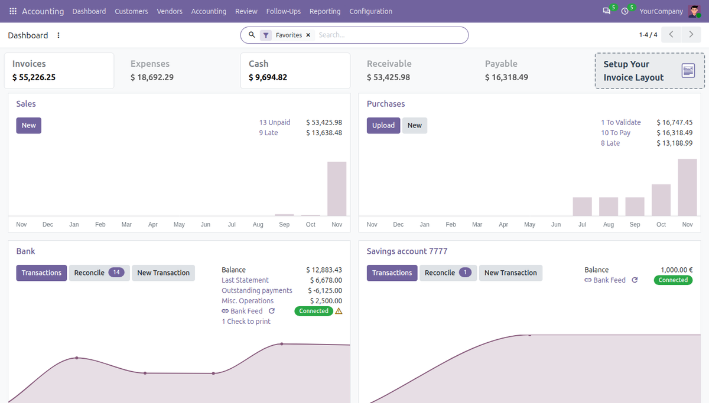
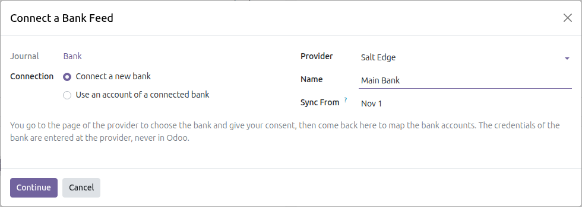
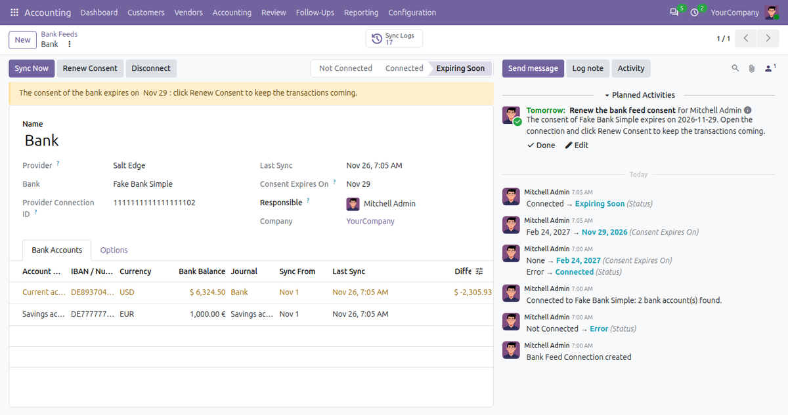
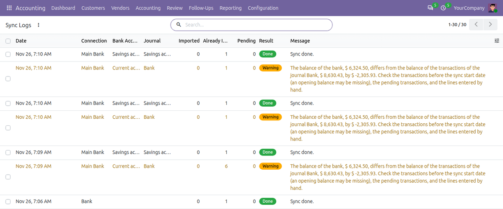

Odoo Mates · free and open source
Bank Feeds
The transactions of your bank accounts fetched automatically into the bank journals: connect the bank once, the new transactions arrive every few hours, ready to reconcile.
Automatic syncNo duplicatesBooked and pendingBalance checkConsent remindersSync logsCommunity EditionFree, LGPL-3
Works with the bank journals, the dashboard and the reconciliation of Odoo.
FreeFree and open source (LGPL-3). You use your own account at the bank feed provider: the keys are entered by you, nothing of ours sits in between.
Overview
No more statement files
Connect the bank from its journal, give your consent on the page of the provider, map the accounts: the transactions then come by themselves.
Connect from the Journal
Connect Bank on the bank journal or its dashboard card, choose the provider and the first date to fetch.
Map the Accounts
Every account of the bank appears: map it to its journal, or create the journal from the line.
Every Few Hours
A scheduled sync fetches the new transactions; Sync Now fetches them at once. The interval is a setting.
No Duplicates
Each transaction carries the identifier given by the bank: a transaction already in the journal is never imported again.
Booked or Pending
Only the booked transactions by default. Pending ones on request, replaced by the booked transaction when it comes.
Partners Found
The partner is set when it is certain: the owner of the bank account of the other party, else the company with exactly its name.
Balance Check
The balance of the bank is compared with the journal after each sync, with a warning when they differ.
Consent Reminders
An activity reminds the responsible a few days before the consent of the bank expires; Renew Consent renews it.
Sync Logs
What each sync imported, skipped and left pending, and the errors of the provider, account by account.
Dashboard
The status on the bank card

✓ Status of the feed and a sync button on the card of the journal.
✓ A warning when the balance of the bank differs.
✓ Connect Bank Feed from the card menu.
Connect
Connect in a few clicks

✓ Choose the provider and the first date to fetch.
✓ Or map the journal to an account of a bank already connected.
✓ The bank credentials are entered at the provider, never in Odoo.
Accounts
One connection, all the accounts

✓ Accounts, numbers, currencies and balances given by the bank.
✓ One journal per account, in the currency of the account.
✓ Sync Now, Renew Consent, Disconnect.
Consent
Reminded before it expires

✓ The expiry date of the consent on the connection.
✓ An activity for the responsible a few days before.
✓ Renew Consent sends you to the provider and back.
Logs
Every sync written down

✓ Imported, already imported and pending transactions.
✓ Warnings on the balance, errors of the provider.
✓ Old logs cleaned up automatically.
Providers
Choose the provider you use
The base is provider-neutral: each provider is a small module of its own, added to the list of providers of the connection.
Salt Edge
Module om_account_bank_feed_saltedge: thousands of banks through the Account Information API of your own Salt Edge account.
Your Provider
A provider module answers a few calls: the consent page, the accounts, the transactions. Ask us for the one you need.
Reconciliation
The transactions are standard bank statement lines: reconcile them as usual, or with Odoo Mates Reconciliation.
Setup
Ready in a few minutes
1. Install a provider
Install the module of your provider, such as Salt Edge, and enter your keys in the settings of the accounting.
2. Connect the bank
On the bank journal, click Connect Bank, then give your consent on the page of the provider.
3. Map the accounts
Back in Odoo, map each account to its bank journal, or create the journal from the line.
4. Sync
Click Sync Now for the first transactions; the next ones come every few hours.
Salt Edge is a trademark of its owner. These modules are made by Odoo Mates and are not affiliated with or endorsed by Salt Edge.